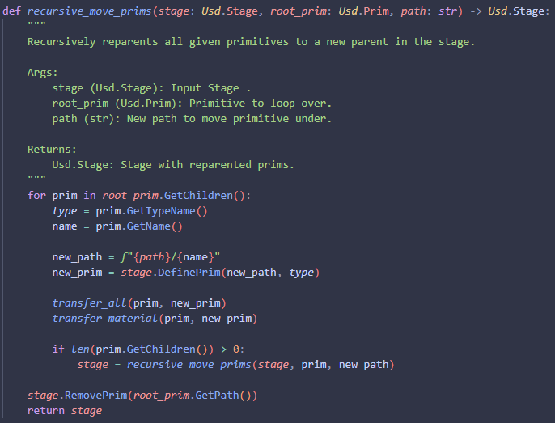
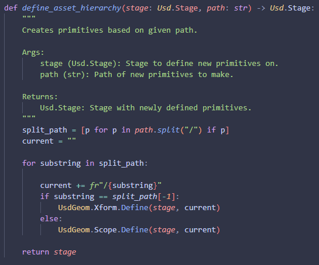
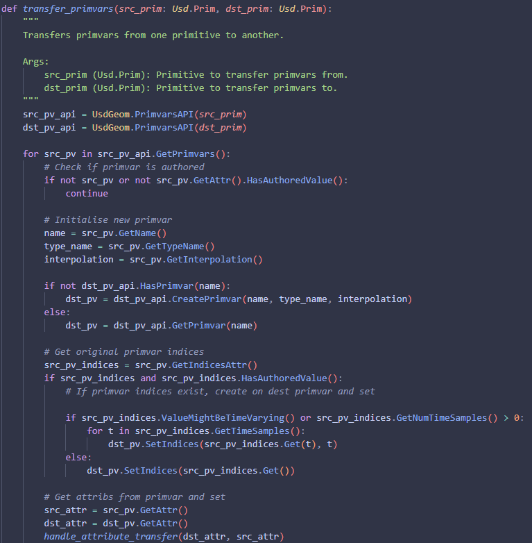
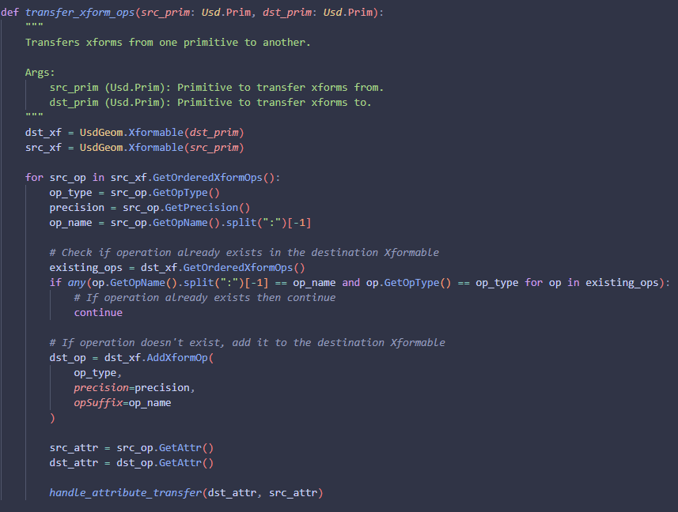

This Usd exporter was designed for my final year university film, and was born from the necessity to
rewrite Usd assets coming from Maya in a meaningful and structured way. The goal was to make asset
sublayering as simple as possible between geometry, materials and animation, while also allowing for
scalability between softwares, as well as for additional sublayering of groom and such if an asset so
requires.
I decided the best approach to this was to write a python module that takes in an input Usd file and
rewrites it, rather than trying to export directly from a software, or even the thought of restructuring
an asset inside of Houdini where you have much greater control in how a Usd asset will behave. The largest
advantage of this I feel is that due to it being decoupled from any software directly, any software can
use this python module to generate consistent Usd asset hierarchies across projects with minimal work, just
requiring a front end Ui like Qt or even just a Houdini HDA. The one caveat to this is that this tool is
designed with my final year film in mind, and so some decisions I have made, I made with the needs of my film
in mind, prioritising a working tool for what we need over a tool that works for every occassion.
The first function that I knew I would need was a way to move one primitive from one path to another. due to
Usd being immutable once it's been created, the next best thing I could do was to take a primitive, create a
new primitive of the same type under this new location, and then copy over the properties of one to another,
before finally removing the original.
This I imagine it working something akin to the idea reparenting, and so one choice I made was to copy over
all the children of the given root primitive recursively, but this does not copy over the root prim itself.
The reason for this is if I have all my components of a model under a single group node in Maya for instance,
When I export my asset, I want to change that root node to have the same root path as the asset name in my
folder structure, and so rather than having the user manually input the name of the asset as the group name,
I am replacing the group entirely with the correct name which I get from my re-exporter class, something I
will be going into a bit later in on this page.

Keeping the last function in mind, the next thing I knew I would need was a way to define my new asset
hierarchy to reparent the incoming primitives to. I decided for my hierarchy, I wanted all nodes above
the asset name itself, to be defined as a scope, and then for the asset itself, I want that to be an
xform. The reason for this is I wanted the asset root to be xformable, meaning the primitive has the
ability to be transformed, but I don't want someone to accidentally move all assets when they only
meant to move one as an example.
I decided the easiest way to manage this was to just take a string input of the path, where each primitive
is dictated by a "/" and split them out that way. From there I am just looping through and adding the new
primitive to the previous path recursively, until all primitives have been defined.

Now for something that caused me more problems than I would like to admit. Transfering attributes is easy
enough, just using their respective Get() and Set() methods. Sadly primvars and xforms seemed to have some
additional hoops to jump through before being able to copy them from one primitive to another.
I start by getting the source primitive's primvars api and loop through all the primvars on that api. I
check if the primvar has an authored value, and if it does, I create the primvar on the new primitive.
I then get the source primvars indices, and check if those exist and have been authored. If they have,
I loop through and set them depending on if they are time sampled or not. I then get the attribute associated
with the current primvar and I transfer the attribute from one to another. The "handle attribute transfer"
function is just a wrapper for checking if an attribute is time sampled, and setting based on that. It's the
exact same type of thing as the indices attribute transfer you see here, but for attributes in general.

Now for the xforms.
